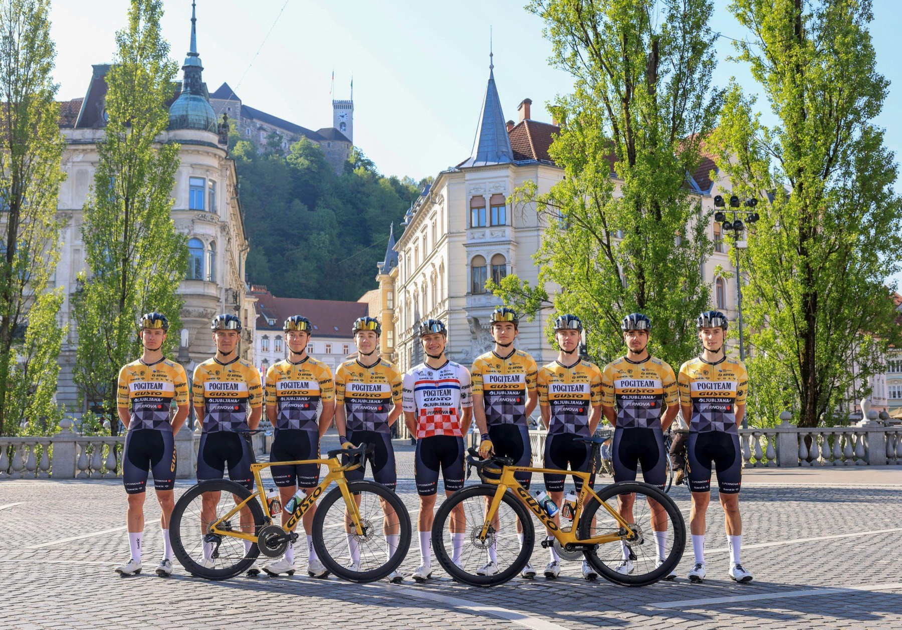
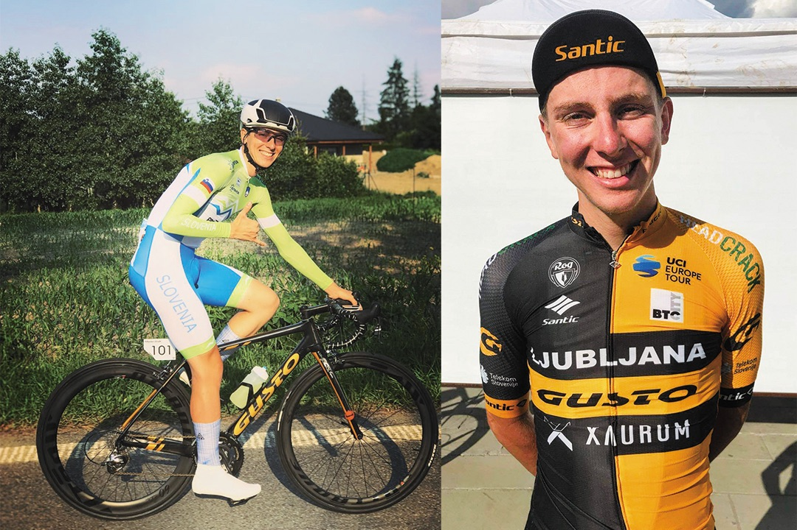
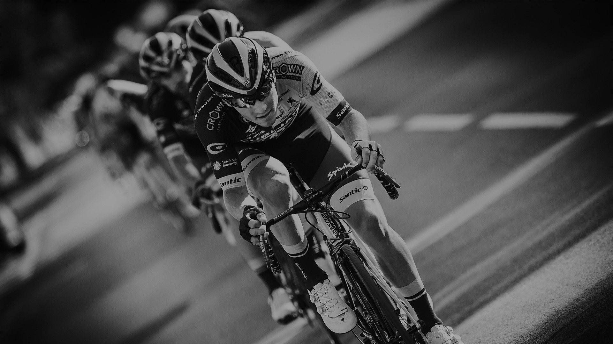

Gusto
Italie
Le rapport équipement / prix ultime. Grâce à une maîtrise totale de sa production, Gusto bouscule les géants du cycle.
Ses cadres monocoque en fibre Toray 1000 offrent légèreté et rigidité, à un prix qui étonne.
Les modèles au studio
Site de la marque ↗En course
Équipe slovène · partenaire depuis 2014
Gusto accompagne le cyclisme professionnel depuis 2014. Avant de devenir champion du monde, Tadej Pogačar a couru sur des vélos Gusto : c'est sur un Gusto qu'il a remporté le Tour de l'Avenir en 2018, avec l'équipe Ljubljana Gusto.
Le partenariat continue aujourd'hui avec Pogi Team Gusto Ljubljana, l'équipe de jeunes coureurs soutenue par Pogačar.


Photos : Gusto · Pogi Team Gusto Ljubljana (bandeau)